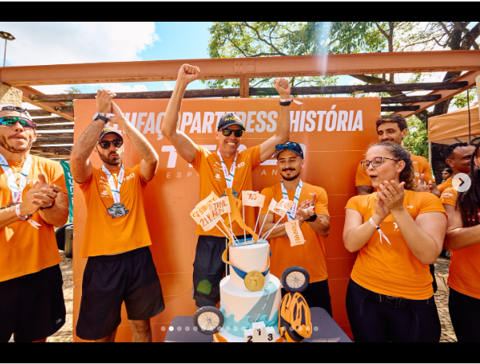

No dia 06/12, o Espaço VIP da Teo Esportes te espera no Clube CEU da UFMG: vestiários, estacionamento, guarda-volumes, comida, bebida, hidratação e recovery pós-prova. São apenas 400 vagas.
Garantir minha vaga no VIPTodo corredor de BH sabe: a Volta da Pampulha não é só mais uma prova. É o encerramento do ano — a linha de chegada de doze meses de treino, planilha e madrugada. Um dia desses merece mais do que procurar lugar pra deixar a mochila e trocar de roupa atrás de um poste.
No VIP Pampulha 2026, você chega, estaciona no Clube CEU da UFMG, troca de roupa em vestiário de verdade e deixa suas coisas no guarda-volumes. Aí só resta uma tarefa: correr.
Na volta, é onde a prova vira festa. Recovery pós-prova para o corpo, hidratação, comida e bebida gelada para brindar o ano com quem correu ao seu lado — e com quem te esperou na torcida. Acompanhantes têm lugar garantido pelo mesmo valor, porque dia de fechamento de ano é dia de estar junto.
É a estrutura da Teo Esportes cuidando do antes, do durante e do depois. Você cuida só dos 18 km.
Troque de roupa e saia pronto para a prova (e volte para um banho de gente).
Dentro do Clube CEU da UFMG, sujeito à capacidade do clube.
Suas coisas seguras enquanto você corre.
Comida liberada para repor a energia no pós-prova.
O brinde de fim de ano, sem racionamento (consumo apenas para maiores de 18 anos).
Água e reposição antes e depois da prova.
Estrutura de recuperação para fechar o dia bem.

Não precisa ser aluno da Teo — e não precisa nem correr: acompanhantes são bem-vindos.
Clube CEU da UFMG
Av. Alfredo Camarate, 617 — São Luiz, Belo Horizonte/MG, 31310-000
Funcionamento: dia 06/12/2026, das 05:00 às 11:30